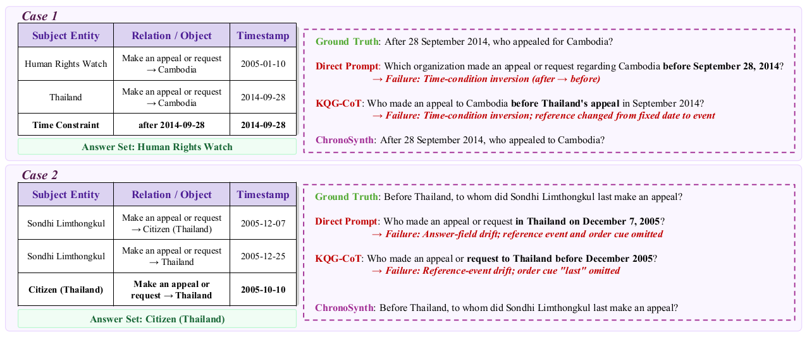
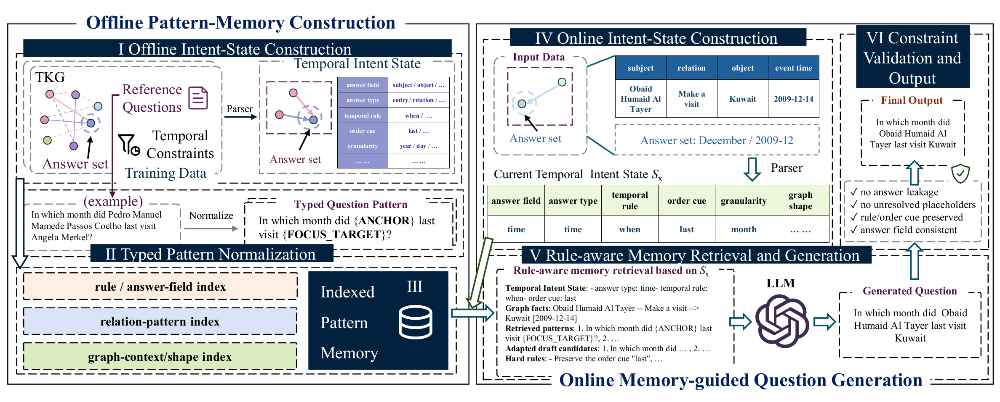
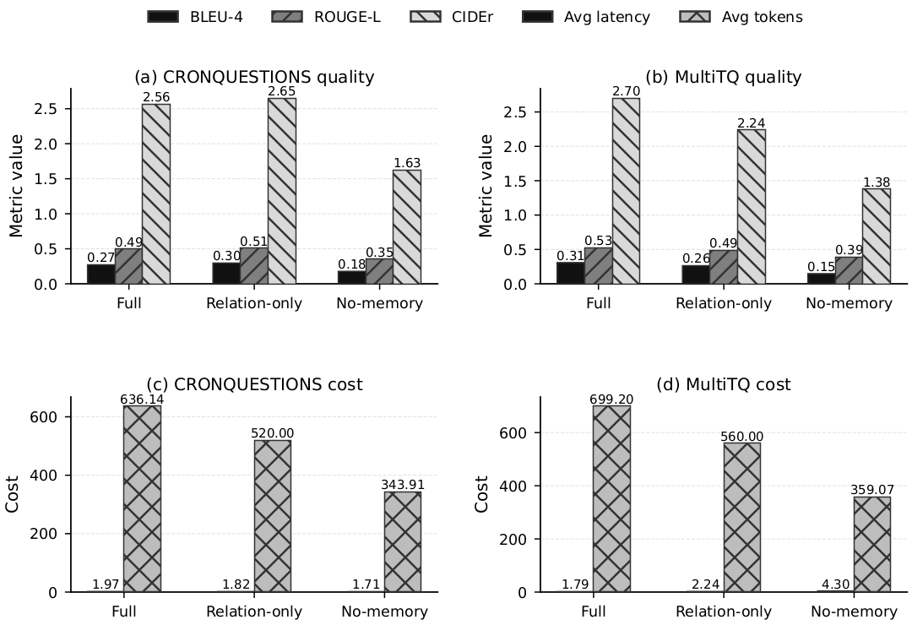
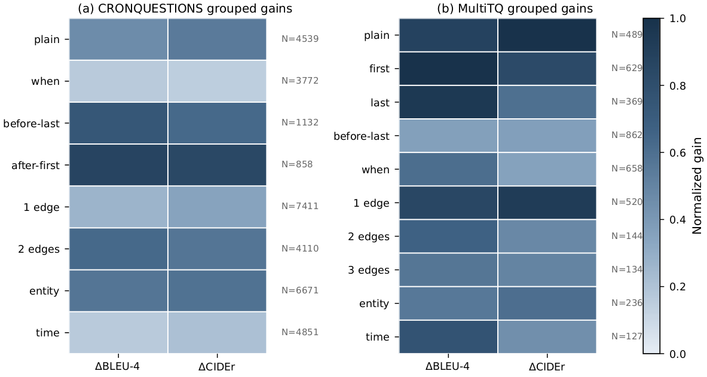
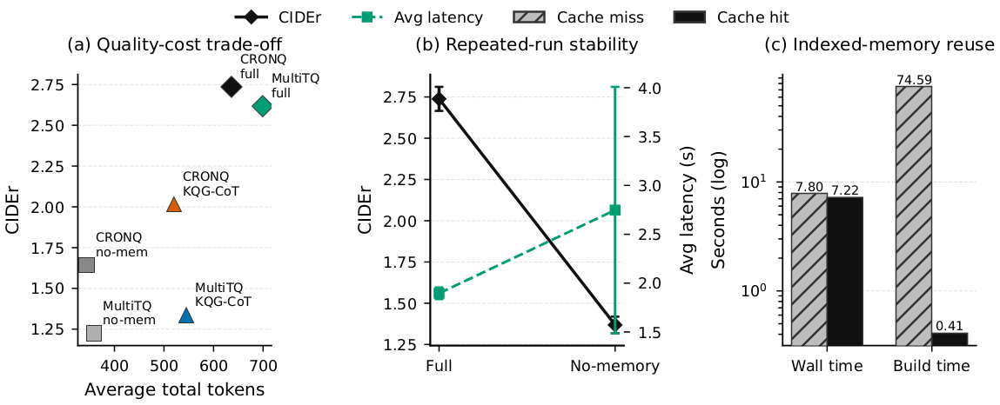
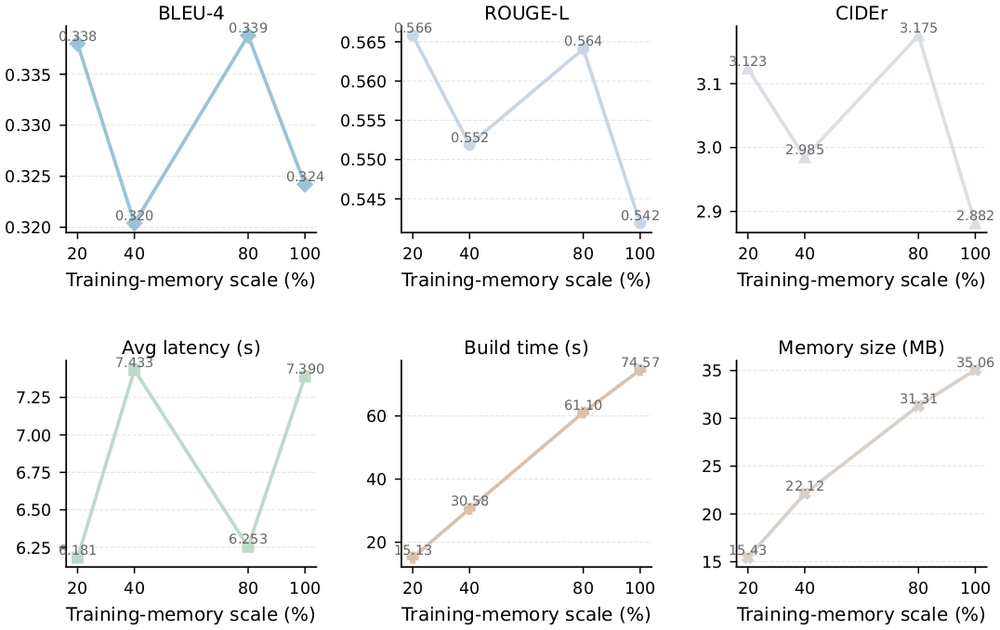

ChronoSynth
Constraint-Aware Question Synthesis over Temporal Knowledge Graphs
ChronoSynth makes temporal intent explicit before generation.
1National University of Defense Technology · 2Beijing University of Posts and Telecommunications

Motivation
Fluent questions still fail when they flip before/after, drop first/last cues, shift the reference event, or ask for the wrong answer field.
Method
Pipeline overview

01Construct intent state
02Retrieve typed patterns
03Adapt to graph evidence
04Validate and realize
Results
Paper-aligned evidence
Best MultiTQ full-test run
BLEU-4 0.3128 · ROUGE-L 0.5299 · CIDEr 2.7134
ChronoSynth-full vs no-memory on MultiTQ
BLEU-4 0.3042 vs 0.1449 · CIDEr 2.6172 vs 1.2250
RQ2
Ablation makes the memory contribution explicit
Removing indexed pattern-memory retrieval causes the largest drop on both datasets. The paper shows that this is the main source of quality gain, while relation-only retrieval helps but cannot fully preserve temporal compatibility on MultiTQ.

RQ3
Gains are not confined to a small subset of temporal questions
The grouped analysis stays positive across temporal rules, graph sizes, and answer types. This matters because the method is intended to preserve temporal semantics broadly, not only improve a few easy cases.
after_first.
plain.

RQ4
Structured conditioning costs tokens, but reuse changes the runtime story
The paper reports a real quality-cost trade-off: full ChronoSynth uses longer prompts, yet it preserves far better temporal quality. Once the index is built, reuse sharply reduces the one-time overhead.

RQ5
Quality stays stable as memory grows beyond the minimum useful scale
Scaling the indexed pattern memory increases construction time and storage, but the quality curve remains relatively flat once enough compatible patterns are available. The effect is visible in both BLEU-4 and CIDEr.

Artifact
Code, traceability, and setup
The public repository keeps only the paper-used ChronoSynth code, aggregate values, and reproduction instructions.